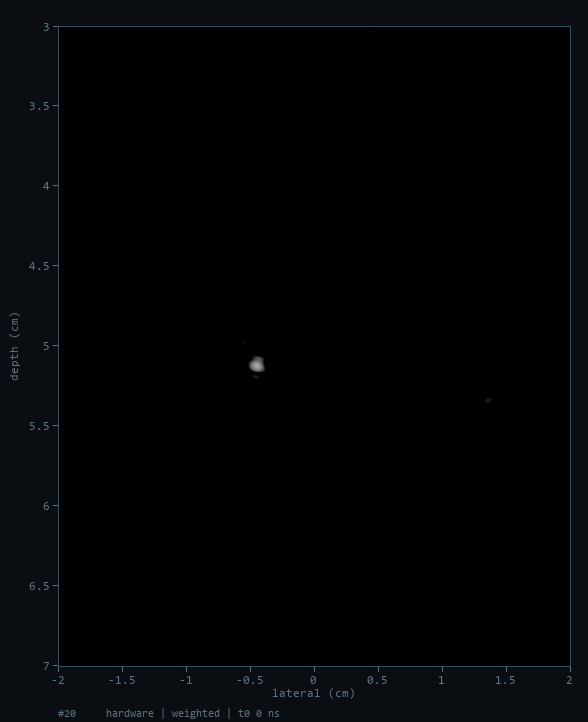
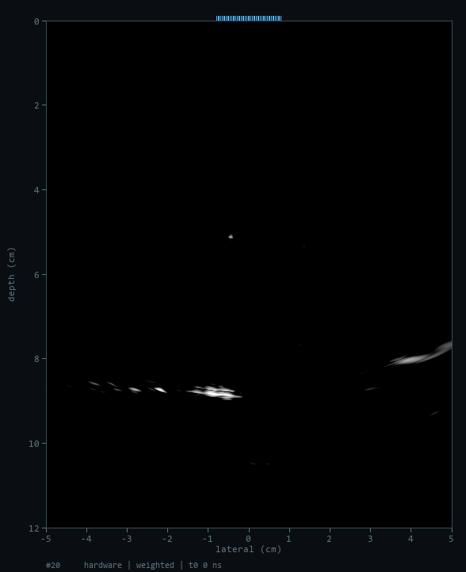
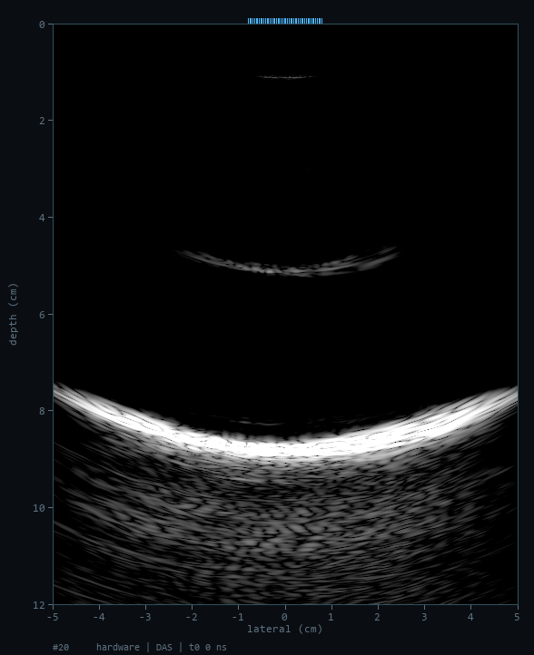
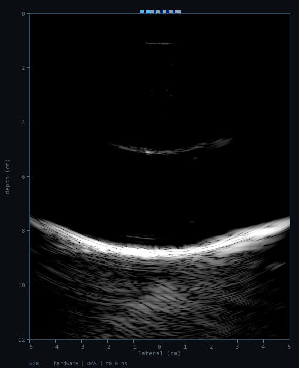

Physical CH6-2 captures: approximately 21 °C water, 1 mm wire near 5 cm, container bottom visible deeper. 14 RF acquisitions in this study, followed by processing sweeps and a flat/air/flat confirmation.




Each condition contains 32 complete frames with zero clipped samples. Four other frames per recording were measured with identical processing. “Wide arc” covers a ±4 mm shell around the wire's range from the measured array's curvature centre, over the full ±50 mm image width, excluding ±5 mm laterally around the target. These are image-domain relative amplitude measurements, not acoustic power or independent SNR measurements.
| Acquisition | View | Arc p99 / wire (dB) | Strongest off-wire feature (dB) | Mean normalized wire peak |
|---|---|---|---|---|
| validation-air-control | das | -12.3 to -11.8 | -4.6 to -4.2 | 0.001017 |
| validation-air-control | weighted | -24.1 to -22.0 | -10.4 to -8.1 | 0.000040 |
| validation-flat-a | das | -21.3 to -21.0 | -15.5 to -14.8 | 0.002163 |
| validation-flat-a | weighted | -50.4 to -50.3 | -26.3 to -25.3 | 0.001553 |
| validation-flat-b | das | -21.3 to -21.1 | -15.8 to -15.0 | 0.002166 |
| validation-flat-b | weighted | -50.9 to -50.3 | -25.8 to -23.9 | 0.001555 |
The remaining strongest feature is point-like near (+13.6, 53.3) mm and may be a bubble or another reflector. It was retained. The bottom is a real, strong reflector and still appears in the whole-scene view. Finite-wire width after nonlinear coherence weighting is not a resolution measurement; no claim of submillimetre resolving power is made.
Chosen wire preset · Ordinary-DAS reference preset · Final 32-frame RF · Machine-readable results
Load a preset with the host's load settings… button, or use python tools/bench.py configure host/presets/wire-21c-1mm-best.json with a running bench host. Loading leaves transmission off. The uploaded firmware is temporary RAM build 8841d2b2; its disarmed identity/configuration response was checked before every capture.
| Condition | Valid frames | Worst channel clipping | Recording |
|---|---|---|---|
| baseline | 0/32 | 0.687% | RF |
| flat-tgc-1800 | 24/24 | 0.327% | RF |
| flat-tgc-2200 | 24/24 | 0.439% | RF |
| flat-tgc-2600 | 24/24 | 0.731% | RF |
| flat-trim-tgc1200 | 16/16 | 0.068% | RF |
| flat-trim-tgc1600 | 16/16 | 0.107% | RF |
| flat-trim-tgc1600-dly15 | 24/24 | 0.000% | RF |
| flat-trim-tgc1600-dly25 | 24/24 | 0.000% | RF |
| flat-trim-tgc2200 | 32/32 | 0.442% | RF |
| flat-trim-tgc800 | 16/16 | 0.000% | RF |
| gap300 | 16/16 | 0.717% | RF |
| validation-air-control | 32/32 | 0.000% | RF |
| validation-flat-a | 32/32 | 0.000% | RF |
| validation-flat-b | 32/32 | 0.000% | RF |
Water sound speed was modeled as approximately 1485 m/s for the reported temperature, using the NPL water sound-speed reference. Temperature and supply voltage were owner-reported, not read back electronically.